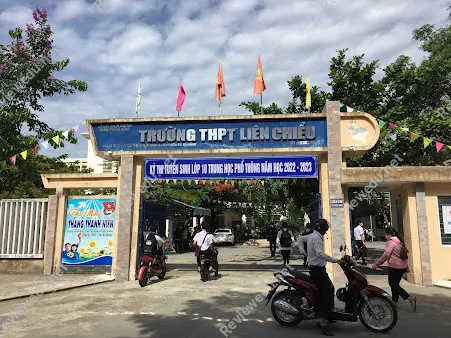
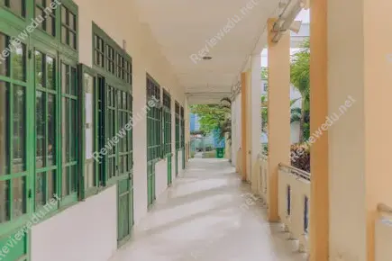
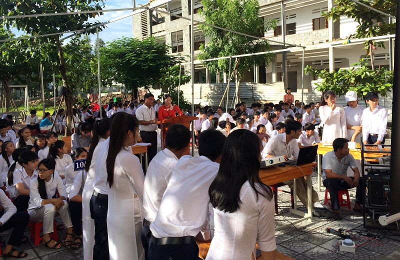

Giới Thiệu Chung
Trường THPT Liên Chiểu được thành lập vào tháng 12 năm 2014 theo quyết định số 9319/2014/QĐ – UBND của UBND thành phố Đà Nẵng. Trải qua gần 2 năm hình thành, xây dựng và phát triển, trường THPT Liên Chiểu đang từng ngày tạo dựng uy tín và khẳng định vai trò đào tạo nguồn nhân lực cho quận nhà nói riêng và cho thành phố, đất nước nói chung; góp phần đáp ứng việc thực hiện mục tiêu xây dựng Đà Nẵng trở thành trung tâm kinh tế, văn hoá, giáo dục, khoa học công nghệ của miền Trung và Tây Nguyên.
BGH cùng toàn thể cán bộ giáo viên nhân viên của trường đang từng ngày nổ lực không ngừng, phát huy tối đa những thuận lợi và vượt qua những khó khăn bước đầu để tạo nền tảng tốt cho những năm học tiếp theo.
Những thuận lợi đó là sự quan tâm, chỉ đạo sâu sát của Sở và Công đoàn ngành GD thành phố, Quận uỷ, UBND Quận Liên Chiểu và sự hỗ trợ của Ban Đại diện cha mẹ học sinh. Đội ngũ giáo viên có tuổi đời trẻ, một số giáo viên tay nghề vững; lãnh đạo, giáo viên, nhân viên gương mẫu, nhiệt tình, có tinh thần và ý thức trách nhiệm cao trong công việc. Tập thể giáo viên đoàn kết, nhất trí, quan tâm tương trợ lẫn nhau. Các tổ chức đoàn thể, bộ phận công tác hoạt động tương đối đều tay, cơ cấu các tổ chuyên môn, văn phòng tương đối phù hợp với tình hình thực tế của trường. Phần lớn phụ huynh học sinh có sự quan tâm đến việc học tập của con em. Nhà trường đóng trên địa bàn khu dân cư yên bình, văn hóa nên thuận lợi cho công tác giáo dục.
Bên cạnh đó là những khó khăn không nhỏ mà trường cần phải khắc phục, như trường mới thành lập, gặp nhiều khó khăn về cơ sở vật chất. Trường hiện chưa có khu hiệu bộ, chưa có phòng chức năng, phòng học bộ môn theo chuẩn, phương tiện và các trang thiết bị dạy học và điều kiện làm việc còn thiếu so với nhu cầu đổi mới dạy học. Sân bãi học tập thể dục, quốc phòng chưa có nên việc tổ chức dạy học còn bất cập. Giáo viên còn trẻ nên kinh nghiệm giảng dạy chưa nhiều, đa phần mỗi giáo viên dạy một môn nên ít có điều kiện để trao đổi chuyên môn, học hỏi lẫn nhau trong công tác giảng dạy và giáo dục học sinh. Đời sống giáo viên, nhân viên còn gặp nhiều khó khăn do không có thu nhập tăng thêm. Một vài giáo viên, nhân viên hiện vẫn chưa có chỗ ở ổn định. Chất lượng đầu vào của học sinh thấp, mặt bằng kiến thức chung yếu hơn so với các trường trong thành phố. Học sinh ở phân tán, một số ở khá xa, điều kiện đi lại khó khăn, do đó việc duy trì sĩ số, nề nếp gặp khó khăn. Số lượng học sinh nghèo, gia cảnh khó khăn lớn. Ý thức học tập của một bộ phận học sinh chưa cao, động cơ học tập chưa rõ ràng. Còn một bộ phận phụ huynh do mưu sinh nên chưa thật sự quan tâm đến việc học hành của con em, phó thác việc học tập của con em mình cho nhà trường. Tổ văn phòng đa phần mới vào nghề nên còn nhiều bỡ ngỡ trong công tác, thiếu kinh nghiệm nên công việc phục vụ cho dạy học chưa linh hoạt. Kinh phí hoạt động tổ chức đoàn thể còn hạn hẹp, một số hoạt động chuyên môn, hoạt động phong trào bị ảnh hưởng do thiếu kinh phí.
Để khắc phục những khó khăn trên, BGH nhà trường đã đề ra định hướng giáo dục cụ thể về mọi mặt, từ công tác quản lí đến công tác chuyên môn, giảng dạy.
Về cơ cấu tổ chức: Những ngày đầu thành lập trường mới có tất cả 17 cán bộ giáo viên nhân viên biên chế thành 3 tổ: tổ Văn phòng, tổ Khoa học tự nhiên và tổ Khoa học xã hội và nhân văn, Ban giám hiệu 1 hiệu trưởng và 1 hiệu phó. Các tổ chức đoàn thể cũng nhanh chóng được thành lập và đi vào hoạt động: chi bộ, đoàn trường, chi đoàn giáo viên, công đoàn, chi hội khuyến học, ban đại diện CMHS. Sang năm học thứ 2, 2016-2017, số lượng CBGVNV tăng, nhà trường tiến hành chia tách biên chế thành 5 tổ: tổ Văn phòng, tổ Toán – Lý, tổ Hóa – Sinh, tổ Khoa học xã hội và tổ Anh văn – Thể dục – quốc phòng. Có thể nói, qua mỗi năm học trường cũng hoàn thiện hơn về mặt cơ cấu tổ chức để thuận lợi trong quản lý và hiệu quả về hoạt động chuyên môn.
Về công tác quản lí: BGH quản lí mọi hoạt động thông qua văn bản hai chiều. Mỗi một hoạt động từ nhỏ đến lớn từ chuyên môn đến chủ nhiệm và các hoạt động khác đều có văn bản chỉ đạo. Đội ngũ giáo viên nhân viên sau khi hoàn thành công việc được giao đều có văn bản báo cáo. Như vậy, tất cả mọi hoạt động đều nhanh chóng đi vào nề nếp và trôi chảy, hiệu quả. Quản lí học sinh thông qua giáo viên chủ nhiệm và hệ thống bảng nội quy, các quy định, quy tắc ứng xử cho cả giáo viên lẫn học sinh theo tuần, tháng bám sát các chủ trương hoạt động của trường. Nhằm tăng cường quản lí bằng CNTT và nâng cao dân chủ, hiệu trưởng tạo mạng nội bộ. Tất cả mọi thành viên trong trường thông qua mạng nội bộ nắm bắt kịp thời, nhanh chóng nhiệm vụ; BGH thông qua mạng nội bộ quản lí tình hình chung một cách hiệu quả. Đồng thời đó là cách tạo sự bình đẳng, thân thiện trong công việc theo định hướng “Trường học thân thiện”. Với những vi phạm của học sinh, GVCN bước đầu giáo dục học sinh, tiếp xúc CMHS và báo cáo BGH nếu học sinh tiếp tục sai phạm. BGH nhanh chóng giải quyết một cách rốt ráo, quyết liệt không để những vi phạm ấy kéo dài và lan rộng. Thông qua các hoạt động ngoài giờ lên lớp và các hoạt động thi đua để giáo dục đạo đức, tư tưởng, lối sống cho học sinh. Nhờ vậy, mới qua một năm tuyển sinh và hoạt động giảng dạy nhưng nhà trường đã ổn định kỉ cương, kỉ luật lao động, nề nếp chuyên môn và giữ vững được nề nếp học tập, kết quả học tập nâng cao, hướng tới những mục tiêu giáo dục toàn diện và lâu dài ở những giai đoạn sau của nhà trường.
Về công tác chuyên môn: Cũng bằng hình thức văn bản hai chiều và mạng nội bộ. Mỗi giáo viên đưa lên mạng nội bộ phần tài nguyên chung những giáo án hay, nhưng bài giảng điện tử, những chuyên đề để trao đổi, học tập nâng cao trình độ chuyên môn nghiệp vụ. BGH chú trọng bồi dưỡng chuyên môn của giáo viên thông qua các hoạt động chuyên môn của ngành GD thành phố; khuyến khích giáo viên chủ động, mạnh dạn trong trao đổi chuyên môn với các trường bạn. Tăng cường các hoạt động dự giờ, thao giảng, làm đồ dùng dạy học. Ngay từ đầu năm học, GV đã xây dựng kế hoạch giảng dạy cho từng bài theo định hướng phát triển năng lực học sinh; đăng kí sử dụng phòng CNTT để sử dụng hiệu quả, tránh chồng chéo. Các tổ, nhóm chuyên môn chủ động, linh hoạt đổi mới trong hoạt động chuyên môn. Mỗi một giáo viên tự mình nổ lực học tập để nâng cao trình độ và làm tấm gương học tập cho học sinh noi theo.
Về cơ sở vật chất: nhà trường đang từng bước hoàn thiện các phòng chức năng, thư viện, cũng như xây mới các dãy phòng học, trồng thêm cây xanh… tạo cảnh quan sư phạm và đưa vào sử dụng, phục vụ cho công tác giảng dạy. Bước đầu, nhà trường chú trọng vào công tác quản lí, công tác chuyên môn nhằm tạo dựng truyền thống tốt đẹp, xây dựng, khẳng định và nâng cao uy tín của trường; từ đó làm cơ sở vững chắc, tạo niềm tin đối với ngành giáo dục thành phố nói chung, với nhân dân trên địa bàn nói riêng. Muốn như vậy, mỗi thầy cô giáo, mỗi học sinh ở giai đoạn đầu như là những viên gạch tạo nên cái móng vững chắc để xây dựng một trường THPT Liên Chiểu nhanh chóng sánh ngang với các trường bạn trong toàn thành phố.